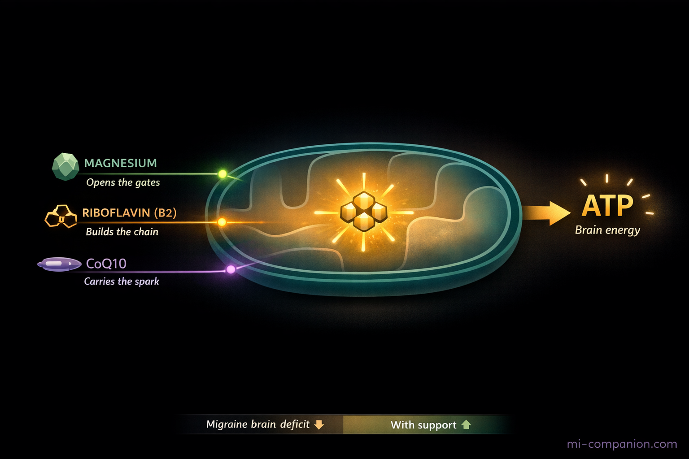
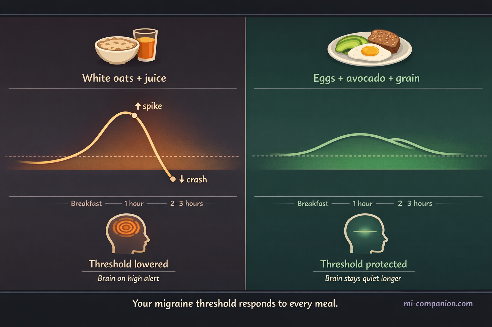

By Rustam Iuldashov
30 years lived experience with chronic migraine | Sources: 24 peer-reviewed references including Advances in Nutrition (network meta-analysis, n=6,616), The Journal of Headache and Pain (prospective cohort, n=202,656), Neurological Sciences (22 RCTs) | Last updated: March 23, 2026
Medical Review: This content is based on peer-reviewed research from Advances in Nutrition, The Journal of Headache and Pain, Brain, Behavior, and Immunity, The BMJ, Neurological Sciences, Nutrients, Frontiers in Microbiology, Frontiers in Nutrition, Clinical Nutrition, Nutritional Neuroscience, and The Journal of Pain.
Important Notice: This article is for informational purposes only and does not replace professional medical advice. Discuss any dietary changes or supplementation with your neurologist or healthcare provider, particularly if you are taking prescription medications.
Key Takeaways
- The migraine brain has documented mitochondrial dysfunction and impaired glucose metabolism — diet directly addresses this physiological reality, not just trigger avoidance.[1]
- High-dose EPA+DHA (≥1,500 mg/day) outperforms all FDA-approved oral prophylactics in a 40-RCT network meta-analysis, reducing attack frequency and severity through specific anti-inflammatory pathways.[2]
- Magnesium deficiency lowers the threshold for cortical spreading depression; dietary targets of 350–420 mg/day with supplementation at 400 mg/day are guideline-supported by the American Headache Society and European Headache Federation.[6][7]
- Riboflavin (400 mg/day) and CoQ10 (100–300 mg/day) support mitochondrial energy production; their combination with magnesium shows synergistic effects in double-blind RCTs.[11]
- Mediterranean dietary patterns are associated with lower attack frequency, shorter duration, and slower chronification — delivering omega-3s, polyphenols, magnesium, and prebiotic fiber in one coherent approach.[12][13]
- Gut microbiome diversity protects against migraine through serotonin regulation, short-chain fatty acid production, and blood-brain barrier maintenance; fermented foods and 30+ plant species per week are accessible starting points.[15][17]
- Blood glucose stability — through regular meals, protein-fat-fiber balance, and consistent hydration — also buffers the “let-down” migraine triggered by stress release.[1][18]
Stop Only Playing Defense
My kitchen used to shrink every year.
Red wine — gone. Aged cheese — gone. Processed meats, MSG, artificial sweeteners, anything on the ever-expanding list someone had decided was suspicious. After 30 years of migraine, the elimination list had grown so long that meals felt less like nourishment and more like unexploded ordnance disposal.
But a diet built entirely on avoidance is only half a strategy. And it’s not the better half.
The emerging science of migraine nutrition is reframing the conversation. Yes, certain foods can trigger attacks in certain people. But a robust and growing body of peer-reviewed evidence has now identified specific nutrients and dietary patterns that actively protect the hypersensitive brain — reducing attack frequency, damping neuroinflammation, and stabilizing the metabolic environment that migraine neurons need to stay quiet.
This is a guide to what to add. Not just what to remove.
Why the Migraine Brain Is Metabolically Different
Start with the biology. You can’t feed a brain you don’t understand.
A 2022 scoping review documented what researchers call the “neuroenergetic hypothesis”: migraine may fundamentally be a disorder of impaired brain glucose metabolism and mitochondrial dysfunction.[1] Brain imaging consistently shows reduced energy production in the occipital cortex of migraine patients — not just during attacks, but in the quiet intervals between them. The migraine brain runs at lower efficiency than a headache-free brain. It burns fuel poorly, and that metabolic fragility makes it far more vulnerable to cortical spreading depression: the slow electrical wave that underlies aura and drives many attacks.[1]
This matters at the table. What you eat every day directly shapes brain energy supply, mitochondrial function, and the baseline level of neuroinflammation in your nervous system. Your plate is not separate from your neurology. It is part of it.
Omega-3 Fatty Acids: The Most Striking Dietary Evidence
The omega-3 findings stopped a lot of neurologists in their tracks.
A 2024 network meta-analysis published in Advances in Nutrition pooled data from 40 randomized controlled trials and 6,616 people with episodic and chronic migraine. The finding: high-dose EPA+DHA supplementation (≥1,500 mg/day) outperformed every FDA-approved oral migraine prophylactic — topiramate, propranolol, valproate, amitriptyline — on both attack frequency and severity reduction.[2] Not marginally. Significantly. A separate 12-week double-blind RCT confirmed that 1,800 mg of EPA daily cut migraine days, severity scores, and disability in people with episodic migraine.[3] A 2025 meta-analysis of 14 trials and 1,944 patients put the average reduction at 1.74 fewer migraine days per month.[4]
The mechanism is biochemical and specific. EPA and DHA inhibit prostaglandins and inflammatory cytokines — the chemical signals that sensitize the trigeminal nerve and turn ordinary pain into the full migraine cascade.[2] These aren’t vague “anti-inflammatory” effects. They target the exact pathway your brain misfires in.
The other side of the omega story is just as important. The standard Western diet is flooded with omega-6 fatty acids — sunflower oil, corn oil, soybean oil — which compete for the same enzymes as omega-3s and push the balance toward pro-inflammatory metabolites. A landmark 182-person RCT published in The BMJ found that simultaneously lowering omega-6 while raising omega-3 produced greater headache reductions than either dietary shift alone.[5] The ratio is the point.
What to actually do
- Eat fatty fish 2–3 times per week: salmon, sardines, mackerel, herring, anchovies
- Add a small handful of walnuts daily — the only nut with meaningful omega-3 content
- Use ground flaxseed or chia seeds on oats, yogurt, or salads
- Non-fish eaters: algae oil provides direct, clean EPA+DHA without the fish
- Replace refined vegetable oils with extra-virgin olive oil. Full stop.
Magnesium: Your Brain’s Molecular Gatekeeper
If omega-3 research is striking, magnesium research is almost embarrassingly clear.
Brain spectroscopy studies have consistently found lower magnesium concentrations in the occipital cortex of migraine patients than in healthy controls — not only during attacks, but as a chronic, baseline deficit.[6] The biology is precise: a magnesium ion physically sits in the NMDA receptor channel, blocking glutamate from activating it. When magnesium falls short, that channel stays unguarded. Glutamate floods in. The electrical wave of cortical spreading depression becomes dramatically easier to trigger.[6]
Magnesium also reduces circulating CGRP — the neuropeptide that dilates intracranial blood vessels and is now the primary target of the most expensive class of migraine biologics. Your body can do some of this work with a mineral you can get from spinach.
The clinical data back this up. A 2025 meta-analysis of 22 RCTs found magnesium supplementation reduced migraine attacks by 2.51 per month, severity by 0.88 standard deviations, and monthly migraine days by 1.66.[7] The American Headache Society, the European Headache Federation, and the Canadian Headache Society all recommend it. There is a reason it keeps appearing in every serious guideline.
The cruel irony: migraine patients are more likely to be magnesium-deficient than the general population, because attacks increase urinary magnesium loss, and chronic stress — a common migraine companion — depletes it further.[6]
Dietary target: 350–420 mg/day
| Food | Magnesium per serving |
|---|---|
| Pumpkin seeds (30 g) ☆ CHAMPION | 156 mg |
| Cooked spinach (100 g) | 78 mg |
| Almonds / cashews (30 g) | ~75 mg |
| Black beans, edamame (100 g) | ~60–70 mg |
| Dark chocolate ≥70% (30 g) | 64 mg |
| Quinoa, cooked (100 g) | 64 mg |
| Avocado (half) | 29 mg |
Supplement note: Magnesium glycinate and magnesium citrate absorb far better than the oxide form. If dietary magnesium consistently falls short, 400 mg/day supplementation is one of the most evidence-backed non-pharmacological interventions for migraine prevention available today.
The Mitochondrial Trio: Riboflavin and CoQ10
Magnesium rarely works alone. Two additional nutrients serve parallel roles inside the mitochondria — and are consistently documented as deficient in migraine patients.
Riboflavin (Vitamin B2) builds the electron transport chain. Without it, mitochondrial complexes I and II can’t function, and brain energy production stalls. The most compelling evidence comes from a massive prospective cohort — 202,656 UK Biobank participants followed for an average of 13 years. Those who developed migraine had substantially lower baseline riboflavin intake at the start of follow-up than those who did not.[8] Diet predicted diagnosis, years later. A pooled meta-analysis of RCTs then confirmed that 400 mg of riboflavin daily for three months significantly reduces migraine frequency, duration, and pain scores.[7] The American Headache Society formally recommends it for adults.[9]
Best food sources: liver is the single richest source by far, followed by eggs, dairy, almonds, spinach, quinoa, and fortified cereals. If food-first isn’t enough, 400 mg/day is the clinical dose.
Coenzyme Q10 is the electron shuttle — the molecular connector that links mitochondrial complexes I and II to the rest of the energy chain. Think of it as the spark plug. CoQ10 blood levels are measurably lower in chronic migraine patients than in healthy controls. A meta-analysis of six RCTs found CoQ10 supplementation reduced migraine frequency by 1.52 attacks per month and shortened attack duration.[10] Typical clinical dose: 100–300 mg/day, taken with a meal containing fat (CoQ10 is fat-soluble).
The three together are more than additive. A double-blind multicenter RCT testing the combination of CoQ10, riboflavin, and magnesium over three months showed reduced pain intensity and significantly improved HIT-6 quality-of-life scores.[11] The synergy makes mechanistic sense: each nutrient addresses a different step of the same energy bottleneck that the migraine brain struggles with every day.

The Mediterranean Pattern: Anti-Inflammatory by Design
Individual nutrients matter. But the pattern they travel in matters even more.
A 2023 cross-sectional study found that higher adherence to the Mediterranean diet was significantly associated with lower headache frequency, shorter attack duration, and better disability scores.[12] A 2024 Italian cohort study confirmed that poor Mediterranean adherence — combined with sleep disruption — accelerated migraine chronification: the progression from episodic attacks to daily or near-daily headache.[13] A separate 2024 study of 280 newly diagnosed migraine patients found that higher diet quality scores predicted lower attack severity and frequency, independent of medication use.[14]
The mechanism isn’t a single ingredient. It’s the convergence. The Mediterranean diet simultaneously delivers a favorable omega-3-to-omega-6 ratio through regular fish and olive oil; dense polyphenol intake from vegetables, fruit, and olive oil that suppresses NF-κB — the master regulator of inflammatory signaling in the brain; magnesium and riboflavin from legumes, leafy greens, and whole grains; abundant prebiotic fiber that feeds a healthy gut microbiome; and slow, steady glucose release that prevents the blood sugar crashes that reliably lower migraine threshold.
You don’t need to move to Crete. The principle is portable. Vegetables at every meal. Olive oil as the primary fat. Fatty fish two to three times per week. Legumes several times per week. Whole grains over refined ones. Ultra-processed food as the exception, not the rhythm.
⚠️ When to Seek Emergency Help
A sudden, severe headache unlike anything you’ve experienced before — the so-called “thunderclap headache” — requires immediate emergency evaluation. So does any headache accompanied by fever, stiff neck, confusion, vision loss, weakness on one side of the body, or difficulty speaking. These symptoms can indicate meningitis, subarachnoid hemorrhage, or stroke.
Dietary changes are not a substitute for emergency care. If you experience any of these symptoms, call your local emergency number immediately. Do not use this article to self-diagnose or self-treat an acute neurological event.
The Gut-Brain Highway
The gut-brain axis has become one of the most active — and most surprising — fronts in migraine research.
People with migraine have a measurably different gut microbiome than those without it.[15] Consistent across studies: lower levels of anti-inflammatory bacteria like Faecalibacterium prausnitzii and Bifidobacterium, and higher levels of pro-inflammatory species. This is not coincidence. A 2024 Mendelian randomization study — a genetic design that rules out reverse causality — found evidence of a likely causal relationship between specific gut microbiota and migraine risk.[16] The microbiome may not just correlate with migraine. It may help drive it.
The mechanism runs in both directions. Gut bacteria synthesize more than 90% of the body’s serotonin. They produce short-chain fatty acids — propionate, butyrate — that reduce neuroinflammation and reinforce the blood-brain barrier. When the microbiome is disrupted, intestinal permeability increases, inflammatory molecules enter systemic circulation, and the brain’s pain threshold falls.[15] A 2025 systematic review confirmed that multi-strain probiotic supplementation — particularly Lactobacillus and Bifidobacterium species — reduced migraine frequency in randomized trials.[17]
The food-first approach
- Fermented foods every day: natural live-culture yogurt, kefir, sauerkraut, kimchi, miso
- Prebiotic fiber: onions, garlic, leeks, oats, slightly underripe bananas, Jerusalem artichokes
- Dietary diversity: aim for 30+ different plant species per week. This sounds daunting until you realize what counts — a teaspoon of cumin, a handful of sunflower seeds, fresh basil, a different variety of lettuce. Herbs, spices, seeds, legumes, fruits, vegetables: every distinct species adds to your tally. Variety, not volume, is what diversifies the microbiome.
Blood Sugar Stability: The Foundation Under Everything
One of the most common — and most underappreciated — dietary contributions to migraine is blood glucose instability.
A genetic analysis confirmed a likely causal link between blood sugar regulation traits and migraine susceptibility.[18] The pathway is well-mapped: when blood sugar falls, the brain signals an emergency. Adrenaline and cortisol flood the system. Glutamate — an excitatory neurotransmitter already implicated in cortical spreading depression — spikes. Serotonin fluctuates. Every one of these changes independently lowers the threshold at which the migraine brain will fire.[18] A 2022 scoping review further proposed that postprandial hypoglycemia — the blood sugar crash that follows a high-sugar meal — may represent a shared metabolic root of both episodic and chronic migraine.[1]
This means skipping breakfast isn’t neutral. Neither is eating a handful of crackers at noon and calling it lunch.

Five rules for glucose stability — all of them practical:
- Never skip meals. Fasting is one of the most consistently reported migraine triggers across patient populations.
- Balance every plate with protein, healthy fat, and fiber. Each component slows glucose absorption and prevents the spike-and-crash cycle.
- Don’t eat refined carbohydrates alone. Pair them with protein or fat.
- Keep emergency snacks available for gaps longer than 4–5 hours: a handful of walnuts, a boiled egg, half an avocado.
- Hydrate consistently. Even mild dehydration — just 1–2% of body weight — measurably raises cortical excitability. It lowers your threshold before the headache even starts.
One more thing worth noting: blood glucose stability also softens what’s sometimes called the “let-down” effect — the migraine that arrives not during stress, but after it, when the body finally relaxes. That cortisol drop at the end of a hard day is less destabilizing when your glucose has been steady throughout it. Stable blood sugar and stress resilience are not separate strategies. They’re the same strategy.
The Migraine-Safe Kitchen: Your Baseline Stock
Not a complicated list. Not a restrictive one. A starting point.
Proteins: Salmon, sardines, mackerel, eggs, Greek yogurt (plain, live cultures), lentils, chickpeas, black beans, edamame, tofu
Leafy greens: Spinach, Swiss chard, kale, arugula — daily, cooked or raw
Healthy fats: Extra-virgin olive oil (primary cooking and dressing fat), avocados, walnuts, almonds
Seeds: Pumpkin seeds (magnesium powerhouse), chia seeds, ground flaxseed
Whole grains: Quinoa, oats, brown rice, buckwheat, farro
Fermented: Natural yogurt, kefir, sauerkraut, kimchi, miso paste
Fruit: Blueberries, raspberries, blackberries (dense polyphenols), slightly underripe bananas, figs, pomegranate
Dark chocolate ≥70%: In moderation — real magnesium, real polyphenols
Minimize: Refined seed oils, ultra-processed snacks, refined sugar, alcohol, irregular meal timing — these are not arbitrary restrictions. Each disrupts the metabolic stability your brain depends on.
Key Takeaways
- The migraine brain has documented mitochondrial dysfunction and impaired glucose metabolism — diet directly addresses this physiological reality, not just trigger avoidance.[1]
- High-dose EPA+DHA (≥1,500 mg/day) outperforms all FDA-approved oral prophylactics in a 40-RCT network meta-analysis.[2]
- Magnesium 350–420 mg/day from food (pumpkin seeds, spinach, legumes) plus 400 mg/day supplementation is guideline-supported by three international headache societies.[6][7]
- Riboflavin (400 mg/day) and CoQ10 (100–300 mg/day) work synergistically with magnesium on mitochondrial energy production.[11]
- Mediterranean dietary patterns slow migraine chronification and reduce attack frequency and duration.[12][13]
- 30+ plant species per week — including herbs, spices, and seeds — diversifies the gut microbiome and strengthens the gut-brain axis.[15][17]
- Blood glucose stability through regular balanced meals is a non-negotiable foundation that also buffers the let-down migraine effect.[1][18]
⚕️ Important Medical Disclaimer
This article is for informational and educational purposes only and does not constitute medical advice, diagnosis, or treatment. The author, Rustam Iuldashov, is not a licensed physician, neurologist, or healthcare professional. He is a patient advocate with 30 years of personal experience living with chronic migraine.
All clinical claims in this article are sourced from peer-reviewed research published in indexed medical journals. Study designs and sample sizes are noted where applicable.
Dietary changes — including supplementation with magnesium, riboflavin, CoQ10, or omega-3 fatty acids — should be discussed with your neurologist or healthcare provider before implementation, particularly if you are taking prescription medications for migraine prevention. Supplements can interact with medications and may not be appropriate for all individuals.
Always consult a qualified healthcare provider for questions about your individual health, migraine treatment, or supplementation decisions. This content was last reviewed for accuracy on March 23, 2026.
References
- Del Moro L, Rota E, Pirovano E, Rainero I. “Migraine, Brain Glucose Metabolism and the ‘Neuroenergetic’ Hypothesis: A Scoping Review.” The Journal of Pain, 23(8):1294–1317 (2022). doi:10.1016/j.jpain.2022.01.009. Study design: Scoping review.
- Tseng PT, Zeng BY, Chen JJ, et al. “High Dosage Omega-3 Fatty Acids Outperform Existing Pharmacological Options for Migraine Prophylaxis: A Network Meta-Analysis.” Advances in Nutrition, 15(2):100163 (2024). doi:10.1016/j.advnut.2023.100163. Study design: Network meta-analysis of RCTs. n=6,616.
- Wang HF, Liu WC, Zailani H, et al. “A 12-Week Randomized Double-Blind Clinical Trial of Eicosapentaenoic Acid Intervention in Episodic Migraine.” Brain, Behavior, and Immunity, 118:459–467 (2024). doi:10.1016/j.bbi.2024.03.015. Study design: RCT. n=70.
- Ghassemi F, et al. “Omega-3 Supplementation in Migraine Prophylaxis: An Updated Systematic Review and Meta-Analysis.” Cephalalgia Reports (2025). doi:10.1016/S2213434425000039. Study design: Systematic review and meta-analysis. n=1,944.
- Ramsden CE, Zamora D, Faurot KR, et al. “Dietary Alteration of n-3 and n-6 Fatty Acids for Headache Reduction in Adults with Migraine: Randomized Controlled Trial.” BMJ, 374:n1448 (2021). doi:10.1136/bmj.n1448. Study design: RCT. n=182.
- Szewczyk AK, Skrobas U, Straburzyński M, et al. “Magnesium as an Important Factor in the Pathogenesis and Treatment of Migraine — From Theory to Practice.” Nutrients, 14(5):1089 (2022). doi:10.3390/nu14051089. Study design: Narrative review.
- Talandashti MK, Shahinfar H, Delgarm P, Jazayeri S. “Effects of Selected Dietary Supplements on Migraine Prophylaxis: A Systematic Review and Dose-Response Meta-Analysis of Randomized Controlled Trials.” Neurological Sciences, 46(2):651–670 (2025). doi:10.1007/s10072-024-07794-0. Study design: Systematic review and meta-analysis. n=22 trials.
- Li H, Feng J, Song Y, et al. “Associations Between Dietary Intakes of Mitochondria-Related Nutrients with the Risk of Migraine: A Prospective Study.” The Journal of Headache and Pain, 26:1 (2025). doi:10.1186/s10194-025-02195-w. Study design: Prospective cohort. n=202,656.
- Bobker SM, Robbins MS. “Nutraceuticals and Headache 2024: Riboflavin, Coenzyme Q10, Feverfew, Magnesium, Melatonin, and Butterbur.” Headache (2025). doi:10.1111/head.14789. Study design: Clinical review.
- Salehi IA, Kamaruddin K, Md Yusof D, et al. “Coenzyme Q10 Supplementation for Prophylaxis in Adult Patients with Migraine — A Meta-Analysis.” BMJ Open, 11(1):e034886 (2021). doi:10.1136/bmjopen-2019-034886. Study design: Systematic review and meta-analysis of RCTs. n=371.
- Gaul C, Diener HC, Danesch U, et al. “Improvement of Migraine Symptoms with a Proprietary Supplement Containing Riboflavin, Magnesium and Q10: A Randomized, Placebo-Controlled, Double-Blind, Multicenter Trial.” The Journal of Headache and Pain, 16:32 (2015). doi:10.1186/s10194-015-0514-5. Study design: RCT. n=130.
- Arab A, Khorvash F, Karimi E, Hadi A, Askari G. “Associations Between Adherence to Mediterranean Dietary Pattern and Frequency, Duration, and Severity of Migraine Headache: A Cross-Sectional Study.” Nutritional Neuroscience, 26(1):1–10 (2023). doi:10.1080/1028415X.2021.2009162. Study design: Cross-sectional. n=335.
- Bovenzi R, Noce A, Conti M, et al. “Poor Adherence to the Mediterranean Diet and Sleep Disturbances Are Associated with Migraine Chronification.” Nutrients, 16(13):2169 (2024). doi:10.3390/nu16132169. Study design: Prospective observational. n=264.
- Feyzpour M, Sedgi FM, Baghdadi G, Mohammadifard R, Rahimlou M. “Investigating the Relationship Between Diet Quality, Lifestyle and Healthy Eating Index with Severity and Migraine Attacks.” Frontiers in Nutrition, 11:1510809 (2024). doi:10.3389/fnut.2024.1510809. Study design: Cross-sectional. n=280.
- Mugo CW, Church E, Horniblow RD, et al. “Unravelling the Gut-Brain Connection: A Systematic Review of Migraine and the Gut Microbiome.” The Journal of Headache and Pain, 26:125 (2025). doi:10.1186/s10194-025-02039-7. Study design: Systematic review. n=14 studies.
- Qu K, Li MX, Gan L, et al. “To Analyze the Relationship Between Gut Microbiota, Metabolites and Migraine: A Two-Sample Mendelian Randomization Study.” Frontiers in Microbiology, 15:1325047 (2024). doi:10.3389/fmicb.2024.1325047. Study design: Mendelian randomization.
- Kiecka A, Szczepanik M. “Migraine and the Gut-Brain Axis — The Role of Microbiome-Targeted Biotics.” Nutrients, 18(5):720 (2025). doi:10.3390/nu18050720. Study design: Narrative review of RCTs.
- Rist PM, Buring JE, Kase CS, Kurth T. “Glucose-Related Traits and Risk of Migraine — A Potential Mechanism and Treatment Consideration.” Nutrients, 14(10):2073 (2022). doi:10.3390/nu14102073. Study design: Mendelian randomization / genetic epidemiology.
- Gazerani P, Papetti L, Dalkara T, Cook CL, Webster C, Bai J. “The Brain, the Eating Plate, and the Gut Microbiome: Partners in Migraine Pathogenesis.” Nutrients, 16(14):2222 (2024). doi:10.3390/nu16142222. Study design: Narrative review.
- Olivito I, Ferraro S, Tarsitano A, et al. “Mediterranean Ketogenic Diet Accounts for Reduced Pain Frequency and Intensity in Patients with Chronic Migraine: A Pilot Study.” Clinical Nutrition, 43(8):1781–1787 (2024). doi:10.1016/j.clnu.2024.06.015. Study design: Pilot intervention. n=21.
- Balali A, Karimi E, Kazemi M, et al. “Associations Between Diet Quality and Migraine Headaches: A Cross-Sectional Study.” Nutritional Neuroscience, 27(7):677–687 (2024). doi:10.1080/1028415X.2023.2244260. Study design: Cross-sectional. n=262.
- Vuralli D, Akgor MC, Dagidir HG, et al. “Microbiota Alterations Are Related to Migraine Food Triggers and Inflammatory Markers in Chronic Migraine Patients with Medication Overuse Headache.” The Journal of Headache and Pain, 25(1):192 (2024). doi:10.1186/s10194-024-01891-3. Study design: Case-control. n=90.
- Stovner LJ, Hagen K, Linde M, Steiner TJ. “The Global Prevalence of Headache: An Update.” The Journal of Headache and Pain, 23(1):34 (2022). doi:10.1186/s10194-022-01402-2. Study design: Systematic review.
- Chen JP, Yang CP, et al. “Neuroimmunological Effects of Omega-3 Fatty Acids on Migraine: A Review.” Frontiers in Neuroscience, 18:1376560 (2024). doi:10.3389/fnins.2024.1376560. Study design: Narrative review.

How We Create Content
- Peer-reviewed sources only. This article cites Advances in Nutrition, The Journal of Headache and Pain, Brain, Behavior, and Immunity, The BMJ, Neurological Sciences, Nutrients, Frontiers in Microbiology, Frontiers in Nutrition, Clinical Nutrition, Nutritional Neuroscience, The Journal of Pain, BMJ Open, and Headache.
- Study transparency. Study design and sample sizes noted for all clinical references.
- Source verification. All 24 claims backed by numbered references with DOI links.
- Experience + Science. 30 years personal migraine experience combined with peer-reviewed evidence.
- Regular updates. Articles reviewed when significant new research emerges.
- No conflicts of interest. No funding from supplement manufacturers, pharmaceutical companies, or food industry brands.
Track What You Eat. See What It Does to Your Brain.
Migraine Companion lets you log meals, supplements, and hydration alongside your attack diary — so you can see which foods protect you and which patterns cost you. Built by someone who has lived this for 30 years.
Last reviewed: March 2026
Next scheduled review: September 2026